FMOD Studio User Manual 2.02
The essential building blocks of an FMOD Studio project are events, assets, buses, and banks. Most game projects also use parameters, effects, VCAs, and snapshots to create more complex behavior. To help you organize these parts of your project, FMOD Studio includes numerous searchable browsers.
Browsers are the first and foremost tool for creating, managing, and organizing your project's contents. There are a number of different browsers in FMOD Studio, but they all have the same basic layout.
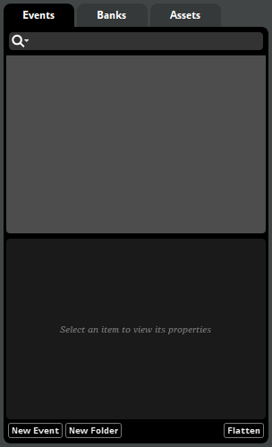
The events browser, a typical browser.
At the top of each browser is a tab labeled with the type of content handled by that browser. "Events," "VCAs," or "Effects," for example. If multiple tabs are displayed, clicking on a tab, or dragging an item over a tab, displays the corresponding browser.
Directly below the browser tab is a search bar. Anything entered into the search bar is used to filter which items are displayed in the browser's hierarchy. For more information about the search bar, see the Searching section of this chapter.
The central section of the browser is the hierarchy. By default, the hierarchy contains a tree view similar to that found in many file browser applications, which includes all the items that can be handled in that browser. This view can be further filtered by using the search bar or the flatten button.
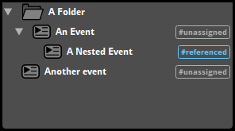
In browsers other than the snapshots browser, items in the hierarchy are sorted by name whenever you load the project, but can be manually sorted into a different order by clicking and dragging. You can sort them by name again by right-clicking on an empty part of the hierarchy and selecting "Sort by Name" from the context menu.
Nearly any item in any browser can be assigned a color. These colors have no effect on in-game behavior, but are a useful way to make specific items easier to notice at a glance. You can also search for items with a specific color using the browser's search bar.
Below the hierarchy is the properties section of the browser. This section displays the properties of the item currently selected in the hierarchy.
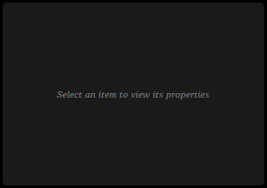 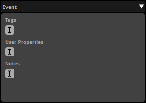
Different items have different properties, as described in their sections below, but there are two property types that are common to many different item types:
At the very bottom of a browser is the browser tray, which contains buttons for making new items and the flatten button.
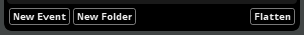
The Events Browser's Tray Buttons.
As their names suggest, the various new item buttons in the browser tray create new items of the specified type. The flatten button is a toggle that causes all folders in the hierarchy to be hidden, and all of the non-folder items in the hierarchy to be displayed in a flat list. This is useful when searching for or sorting items without showing the folders that they reside in.
Each browser in FMOD Studio features a search bar that you can use to find specific items in that browser.
Typing text into the search bar causes the browser to display items whose names contain that text. For example, typing "ele" will find events named "elephant" and "skeleton" if they exist in your project.
Entering a GUID into the browser search bar causes that browser to display items with that GUID and items which contain other items with that GUID. You can get the GUIDs for most items by copying the item then pasting in the search bar or a supported text editor. For example, pasting a GUID into the events browser's search bar will find events with that GUID, as well as events containing tracks, effects, or instruments with that GUID; and pasting a GUID into the snapshot browser's search bar will find snapshots and snapshot groups with that GUID, as well as snapshot groups containing snapshots with that GUID. Because GUIDs are usually unique, a search for a GUID normally returns only one result.
Typing a hash symbol ("#") followed by the name of a tag into the events browser, routing browser, VCAs browser, or banks browser's search bar causes that browser to display events that feature that tag.
The search bar is not case-sensitive.
Clicking on a search bar's magnifying glass icon opens the magnifying glass menu. Clicking on any item in the magnifying glass menu adds a special search term to the search bar. All special search terms are case-sensitive, and can also be typed into the search bar manually.
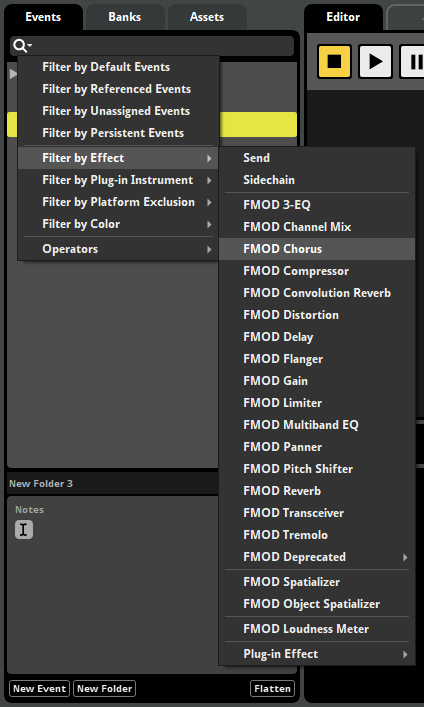
The magnifying glass menu items are summarized in the table below, along with their corresponding special search terms, the browsers in which they may be found, and their effects.
| Events Browser Magnifying Glass Menu Item | Term | Description |
|---|---|---|
| Filter by Default Events | #default |
Searches for events that are defaults. |
| Filter by Referenced Events | #referenced |
Searches for events that are referenced by other events. |
| Filter by Unassigned Events | #unassigned |
Searches for events that are not assigned to any banks. |
| Filter by Persistent Events | #query:(EventAutomatableProperties.isPersistent == true) |
Searches for events that are persistent and so never naturally stop. |
| Filter by Effect > send | #query:(MixerSend) |
Searches for events that contain at least one send effect. |
| Filter by Effect > Sidechain | #query:(Sidechain) |
Searches for events that contain at least one sidechain effect. |
| Filter by Effect > FMOD 3-EQ | #query:(ThreeEQEffect) |
Searches for events that contain at least one 3-EQ effect. |
| Filter by Effect > FMOD Channel Mix | #query:(ChannelMixEffect) |
Searches for events that contain at least one channel mix effect. |
| Filter by Effect > FMOD Chrous | #query:(ChorusEffect) |
Searches for events that contain at least one chorus effect. |
| Filter by Effect > FMOD Compressor | #query:(CompressorEffect) |
Searches for events that contain at least one compressor effect. |
| Filter by Effect > FMOD Convolution Reverb | #query:(ConvolutionReverbEffect) |
Searches for events that contain at least one convolution reverb effect. |
| Filter by Effect > FMOD Distortion | #query:(DistortionEffect) |
Searches for events that contain at least one distortion effect. |
| Filter by Effect > FMOD Delay | #query:(DelayEffect) |
Searches for events that contain at least one delay effect. |
| Filter by Effect > FMOD Flanger | #query:(FlangerEffect) |
Searches for events that contain at least one flanger effect. |
| Filter by Effect > FMOD Gain | #query:(GainEffect) |
Searches for events that contain at least one gain effect. |
| Filter by Effect > FMOD Limiter | #query:(LimiterEffect) |
Searches for events that contain at least one limiter effect. |
| Filter by Effect > FMOD Multiband EQ | #query:(MultibandEqEffect) |
Searches for events that contain at least one multiband EQ effect. |
| Filter by Effect > FMOD Panner | #query:(PannerEffect) |
Searches for events that contain at least one panner effect. |
| Filter by Effect > FMOD Pitch Shifter | #query:(PitchShifterEffect) |
Searches for events that contain at least one pitch shifter effect. |
| Filter by Effect > FMOD Reverb | #query:(SFXReverbEffect) |
Searches for events that contain at least one reverb effect. |
| Filter by Effect > FMOD Transceiver | #query:(TransceiverEffect) |
Searches for events that contain at least one transceiver effect. |
| Filter by Effect > FMOD Tremolo | #query:(TremoloEffect) |
Searches for events that contain at least one tremolo effect. |
| Filter by Effect > FMOD Deprecated > FMOD Highpass | #query:(HighpassEffect) |
Searches for events that contain at least one highpass effect. |
| Filter by Effect > FMOD Deprecated > FMOD Highpass Simple | #query:(HighpassSimpleEffect) |
Searches for events that contain at least one highpass simple effect. |
| Filter by Effect > FMOD Deprecated > FMOD Lowpass | #query:(LowpassEffect) |
Searches for events that contain at least one lowpass effect. |
| Filter by Effect > FMOD Deprecated > FMOD Lowpass Simple | #query:(LowpassSimpleEffect) |
Searches for events that contain at least one lowpass simple effect. |
| Filter by Effect > FMOD Deprecated > FMOD Parametric EQ | #query:(ParamEqEffect) |
Searches for events that contain at least one parametric EQ effect. |
| Filter by Effect > FMOD Spatializer | #query:(SpatialiserEffect) |
Searches for events that contain at least one spatializer effect. |
| Filter by Effect > FMOD Object Spatializer | #query:(ObjectSpatialiserEffect) |
Searches for events that contain at least one object spatializer effect. |
| Filter by Effect > FMOD Loudness Meter | #query:(LoudnessMeter) |
Searches for events that contain at least one loudness meter effect. |
Filter by Effect > Plug-in Effect > <effect name> |
#query:(Plugin.identifier == "<plug-in identifier>") |
Searches for events that contain the selected plug-in effect. |
Filter by Plug-in Instrument > <instrument name> |
#query:(Plugin.identifier == "<plug-in identifier>") |
Searches for events that contain the selected plug-in instrument. |
Filter by Platform Exclusion > <platform name> |
#references:<GUID(s) of the selected platform(s)> |
Searches for events that contain effects or tracks to be excluded from banks built for the chosen platform. |
| Filter by Color > Default | #query:(Colorable.color == Default) |
Searches for events that are not assigned colors. |
Filter by Color > <color> |
#query:(Colorable.color == <selected color>) |
Searches for events and folders set to the selected color. |
| Operators > AND | AND |
Searches for items that match both the term before the AND in the search bar, and the term after it. |
| Operators > OR | OR |
Searches for items that match either the term before the OR in the search bar, or the term after it. |
| Operators > NOT | NOT |
Searches for items that match the term before the NOT in the search bar, and do not match the term after it. |
| Banks Browser Magnifying Glass Menu item | Term | Description |
|---|---|---|
| Filter by Audio Table | #query:(AudioTable) |
Searches for banks that feature an audio table. |
| Filter by Color > Default | #query:(Colorable.color == Default) |
Searches for banks and folders that are not assigned colors. |
Filter by Color > <color> |
#query:(Colorable.color == <selected color>) |
Searches for banks and folders set to the selected color. |
| Operators > AND | AND |
Searches for items that match both the term before the AND in the search bar, and the term after it. |
| Operators > OR | OR |
Searches for items that match either the term before the OR in the search bar, or the term after it. |
| Operators > NOT | NOT |
Searches for items that match the term before the NOT in the search bar, and do not match the term after it. |
| Assets Browser Magnifying Glass Menu item | Term | Description |
|---|---|---|
| Filter by Missing Assets | #missing |
Searches for assets that exist according to the project's metadata, but which are not present in the paths specified in that metadata. |
| Filter by Modified Assets | #modified |
Searches for assets whose files have been changed outside of FMOD Studio since the last time their metadata was updated. |
| Filter by Unimported Assets | #unimported |
Searches for assets that are present in the project's assets folder, but which are not currently imported into the project. |
| Filter by Unused Assets | #unused |
Searches for assets that are not used in any event. This search term will find assets that are used in audio tables and programmer instruments if they are not also used in instruments of other types. |
| Filter by Streaming Assets | #streaming |
Searches for assets that are set to stream. For more information about streaming assets, see the Compression and Platform Encoding section of the Managing Assets chapter. |
| Filter by Custom Encoding Settings | #customized |
Searches for assets that have custom encoding settings. For more information about encoding settings, see the Compression and Platform Encoding section of the Managing Assets chapter. |
| Filter by Advanced Query > Encoding Settings Queries > Filter by Encoding Format Name | #query:(EncodingSetting.encodingFormat == <name of encoding format>) |
Searches for assets set to use the specified encoding format when built for at least one platform. |
| Filter by Advanced Query > Encoding Settings Queries > Filter by Encoding Sample Rate | #query:(EncodingSetting.sampleRate == <sample rate in Hertz>) |
Searches for assets set to use the specified sample rate on at least one target platform. |
| Filter by Advanced Query > File Properties Queries > Filter by File Length | #query:(AudioFile.length <operator> <length in seconds>) |
Searches for assets that match the condition defined by the operator and specified length. Valid operators include greater than (">"), less that ("<"), equal to ("=="), greater than or equal to (">="), less than or equal to ("<="). |
| Filter by Advanced Query > File Properties Queries > Filter by File Channel Count | #query:(AudioFile.channelCount == <number of channels>) |
Searches for assets whose channel format has the specified number of channels, including LFE channels. |
| Filter by Advanced Query > File Properties Queries > Filter by File Sample Rate | #query:(AudioFile.frequencyInKHz <operator> <sample rate in Hertz>) |
Searches for assets that match the condition defined by the operator and sample rate. Valid operators include greater than (">"), less that ("<"), equal to ("=="), greater than or equal to (">="), less than or equal to ("<="). |
Filter by Bank > <bank name> |
#references:<GUID of selected bank> |
Searches for assets used in events assigned to the specified bank. |
| Filter by Color > Default | #query:(Colorable.color == Default) |
Searches for assets and folders that are not assigned colors. |
Filter by Color > <color> |
#query:(Colorable.color == <selected color>) |
Searches for assets and folders set to the selected color. |
| Operators > AND | AND |
Searches for items that match both the term before the AND in the search bar, and the term after it. |
| Operators > OR | OR |
Searches for items that match either the term before the OR in the search bar, or the term after it. |
| Operators > NOT | NOT |
Searches for items that match the term before the NOT in the search bar, and do not match the term after it. |
| Routing Browser Magnifying Glass Menu item | Term | Description |
|---|---|---|
| Filter by Color > Default | #query:(Colorable.color == Default) |
Searches for buses and folders that are not assigned colors. |
Filter by Color > <color> |
#query:(Colorable.color == <selected color>) |
Searches for buses and folders set to the selected color. |
| Operators > AND | AND |
Searches for items that match both the term before the AND in the search bar, and the term after it. |
| Operators > OR | OR |
Searches for items that match either the term before the OR in the search bar, or the term after it. |
| Operators > NOT | NOT |
Searches for items that match the term before the NOT in the search bar, and do not match the term after it. |
| VCAs Browser Magnifying Glass Menu item | Term | Description |
|---|---|---|
| Filter by Color > Default | #query:(Colorable.color == Default) |
Searches for VCAs, buses, and events that are not assigned colors. |
Filter by Color > <color> |
#query:(Colorable.color == <selected color>) |
Searches for VCAs, buses, and events set to the selected color. |
| Operators > AND | AND |
Searches for items that match both the term before the AND in the search bar, and the term after it. |
| Operators > OR | OR |
Searches for items that match either the term before the OR in the search bar, or the term after it. |
| Operators > NOT | NOT |
Searches for items that match the term before the NOT in the search bar, and do not match the term after it. |
| Snapshots Browser Magnifying Glass Menu item | Term | Description |
|---|---|---|
| Filter by Color > Default | #query:(Colorable.color == Default) |
Searches for snapshots and snapshot groups that are not assigned colors. |
Filter by Color > <color> |
#query:(Colorable.color == <selected color>) |
Searches for snapshots and snapshot groups set to the selected color. |
Filter by Tag > <tag name> |
#<selected tag> |
Searches for snapshots with the selected tag. |
| Operators > AND | AND |
Searches for items that match both the term before the AND in the search bar, and the term after it. |
| Operators > OR | OR |
Searches for items that match either the term before the OR in the search bar, or the term after it. |
| Operators > NOT | NOT |
Searches for items that match the term before the NOT in the search bar, and do not match the term after it. |
| Parameters Browser Magnifying Glass Menu item | Term | Description |
|---|---|---|
| Filter by Global Parameters | #global |
Searches for preset parameters that are global, meaning that all parameters based on the same global parameter share the same value. |
| Filter by Read-only Parameters | #readonly |
Searches for preset parameters that are set to read only mode, meaning they can be set by automation and modulation but not directly by your game's code. |
| Filter by Unused Parameters | #unused |
Searches for preset parameters that are not used in any event in your project. |
| Filter by Parameter Type > Continuous | #query:(GameParameter.parameterType == "0") |
Searches for preset parameters of the continuous parameter type. |
| Filter by Parameter Type > Discrete | #query:(GameParameter.parameterType == "1") |
Searches for preset parameters of the discrete parameter type. |
| Filter by Parameter Type > Labeled | #query:(GameParameter.parameterType == "2") |
Searches for preset parameters of the labeled parameter type. |
| Filter by Parameter Type > Distance | #query:(GameParameter.parameterType == "3") |
Searches for preset parameters of the distance built-in parameter type. |
| Filter by Parameter Type > Distance (Normalized) | #query:(GameParameter.parameterType == "10") |
Searches for preset parameters of the distance (normalized) built-in parameter type. |
| Filter by Parameter Type > Direction | #query:(GameParameter.parameterType == "4") |
Searches for preset parameters of the direction built-in parameter type. |
| Filter by Parameter Type > Elevation | #query:(GameParameter.parameterType == "5") |
Searches for preset parameters of the elevation built-in parameter type. |
| Filter by Parameter Type > Event Cone Angle | #query:(GameParameter.parameterType == "6") |
Searches for preset parameters of the event cone angle built-in parameter type. |
| Filter by Parameter Type > Event Orientation | #query:(GameParameter.parameterType == "7") |
Searches for preset parameters of the event orientation built-in parameter type. |
| Filter by Parameter Type > Speed (Relative) | #query:(GameParameter.parameterType == "8") |
Searches for preset parameters of the speed (relative) built-in parameter type. |
| Filter by Parameter Type > Speed (Absolute) | #query:(GameParameter.parameterType == "9") |
Searches for preset parameters of the speed (absolute) built-in parameter type. |
| Filter by Color > Default | #query:(Colorable.color == Default) |
Searches for preset parameters that are not assigned colors. |
Filter by Color > <color> |
#query:(Colorable.color == <selected color>) |
Searches for preset parameters set to the selected color. |
| Operators > AND | AND |
Searches for items that match both the term before the AND in the search bar, and the term after it. |
| Operators > OR | OR |
Searches for items that match either the term before the OR in the search bar, or the term after it. |
| Operators > NOT | NOT |
Searches for items that match the term before the NOT in the search bar, and do not match the term after it. |
| Effects Browser Magnifying Glass Menu item | Term | Description |
|---|---|---|
| Filter by Unused Effects | #unused |
Searches for preset effects that are not used in any event in your project. |
| Filter by Effect > send | #query:(MixerSend) |
Searches for send preset effects. |
| Filter by Effect > Sidechain | #query:(Sidechain) |
Searches for sidechain preset effects. |
| Filter by Effect > FMOD 3-EQ | #query:(ThreeEQEffect) |
Searches for 3-EQ preset effects. |
| Filter by Effect > FMOD Channel Mix | #query:(ChannelMixEffect) |
Searches for channel mix preset effects. |
| Filter by Effect > FMOD Chrous | #query:(ChorusEffect) |
Searches for chorus preset effects. |
| Filter by Effect > FMOD Compressor | #query:(CompressorEffect) |
Searches for compressor preset effects. |
| Filter by Effect > FMOD Convolution Reverb | #query:(ConvolutionReverbEffect) |
Searches for convolution reverb preset effects. |
| Filter by Effect > FMOD Distortion | #query:(DistortionEffect) |
Searches for distortion preset effects. |
| Filter by Effect > FMOD Delay | #query:(DelayEffect) |
Searches for delay preset effects. |
| Filter by Effect > FMOD Flanger | #query:(FlangerEffect) |
Searches for flanger preset effects. |
| Filter by Effect > FMOD Gain | #query:(GainEffect) |
Searches for gain preset effects. |
| Filter by Effect > FMOD Limiter | #query:(LimiterEffect) |
Searches for limiter preset effects. |
| Filter by Effect > FMOD Multiband EQ | #query:(MultibandEqEffect) |
Searches for multiband EQ preset effects. |
| Filter by Effect > FMOD Panner | #query:(PannerEffect) |
Searches for panner preset effects. |
| Filter by Effect > FMOD Pitch Shifter | #query:(PitchShifterEffect) |
Searches for pitch shifter preset effects. |
| Filter by Effect > FMOD Reverb | #query:(SFXReverbEffect) |
Searches for reverb preset effects. |
| Filter by Effect > FMOD Transceiver | #query:(TransceiverEffect) |
Searches for transceiver preset effects. |
| Filter by Effect > FMOD Tremolo | #query:(TremoloEffect) |
Searches for tremolo preset effects. |
| Filter by Effect > FMOD Deprecated > FMOD Highpass | #query:(HighpassEffect) |
Searches for highpass preset effects. |
| Filter by Effect > FMOD Deprecated > FMOD Highpass Simple | #query:(HighpassSimpleEffect) |
Searches for highpass simple preset effects. |
| Filter by Effect > FMOD Deprecated > FMOD Lowpass | #query:(LowpassEffect) |
Searches for lowpass preset effects. |
| Filter by Effect > FMOD Deprecated > FMOD Lowpass Simple | #query:(LowpassSimpleEffect) |
Searches for lowpass simple preset effects. |
| Filter by Effect > FMOD Deprecated > FMOD Parametric EQ | #query:(ParamEqEffect) |
Searches for parametric EQ preset effects. |
| Filter by Effect > FMOD Spatializer | #query:(SpatialiserEffect) |
Searches for spatializer preset effects. |
| Filter by Effect > FMOD Object Spatializer | #query:(ObjectSpatialiserEffect) |
Searches for object spatializer preset effects. |
| Filter by Effect > FMOD Loudness Meter | #query:(LoudnessMeter) |
Searches for loudness meter preset effects. |
Filter by Effect > Plug-in Effect > <effect name> |
#query:(Plugin.identifier == "<plug-in identifier>") |
Searches for preset effects of the selected plug-in effect type. |
Filter by Platform Exclusion > <platform name> |
#references:<GUID of the selected platform> |
Searches for preset effects to be excluded from banks built for the selected platform. |
| Filter by Color > Default | #query:(Colorable.color == Default) |
Searches for preset effects and folders that are not assigned colors. |
Filter by Color > <color> |
#query:(Colorable.color == <selected color>) |
Searches for preset effects and folders set to the selected color. |
| Operators > AND | AND |
Searches for items that match both the term before the AND in the search bar, and the term after it. |
| Operators > OR | OR |
Searches for items that match either the term before the OR in the search bar, or the term after it. |
| Operators > NOT | NOT |
Searches for items that match the term before the NOT in the search bar, and do not match the term after it. |
| Tags Browser Magnifying Glass Menu item | Term | Description |
|---|---|---|
| Filter by Color > Default | #query:(Colorable.color == Default) |
Searches for tags, events, and snapshots that are not assigned colors. |
Filter by Color > <color> |
#query:(Colorable.color == <selected color>) |
Searches for tags, events, and snapshots set to the selected color. |
| Operators > AND | AND |
Searches for items that match both the term before the AND in the search bar, and the term after it. |
| Operators > OR | OR |
Searches for items that match either the term before the OR in the search bar, or the term after it. |
| Operators > NOT | NOT |
Searches for items that match the term before the NOT in the search bar, and do not match the term after it. |
| Sessions Browser Magnifying Glass Menu item | Term | Description |
|---|---|---|
| Filter by Color > Default | #query:(Colorable.color == Default) |
Searches for profiler sessions and folders that are not assigned colors. |
Filter by Color > <color> |
#query:(Colorable.color == <selected color>) |
Searches for profiler sessions and folders set to the selected color. |
| Operators > AND | AND |
Searches for items that match both the term before the AND in the search bar, and the term after it. |
| Operators > OR | OR |
Searches for items that match either the term before the OR in the search bar, or the term after it. |
| Operators > NOT | NOT |
Searches for items that match the term before the NOT in the search bar, and do not match the term after it. |
| Scenes Browser Magnifying Glass Menu item | Term | Description |
|---|---|---|
| Filter by Color > Default | #query:(Colorable.color == Default) |
Searches for scenes and folders that are not assigned colors. |
Filter by Color > <color> |
#query:(Colorable.color == <selected color>) |
Searches for scenes and folders set to the selected color. |
| Operators > AND | AND |
Searches for items that match both the term before the AND in the search bar, and the term after it. |
| Operators > OR | OR |
Searches for items that match either the term before the OR in the search bar, or the term after it. |
| Operators > NOT | NOT |
Searches for items that match the term before the NOT in the search bar, and do not match the term after it. |
When searching using multiple AND, OR, and NOT operators, it may sometimes be useful to surround groups of search terms in parenthesis. Surrounding a group of search terms in parenthesis indicates precedence, such that the operators inside the parenthesis must be evaluated before those outside it. As a result, this could be used to disambiguate between, for example, river NOT (#boat AND #highTension) and (river NOT #boat) AND #highTension.
Tags can be used to organize events, scenes, sessions, and snapshots in the events browser, banks browser routing browser, VCAs browser, and banks browser. To search for items with a particular tag, click on the browser's search bar, then type a hash symbol ("#") followed by the name of the tag.
To add a tag to an item, select that item in the browser. Then, click on the I-beam icon that appears under "Tags" near the bottom of the browser, and type the name of the new tag.
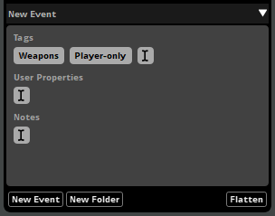
You can also add a tag to an item by right-clicking on the event in a browser, then selecting "Assign to Tag" from the context menu, and an appropriate tag from the submenu. This command is not available in the routing browser.
There is no limit to the number of tags that a taggable items may have, and multiple different items can have the same tags.
The tags browser contains tools for creating, viewing, organizing, editing, and deleting tags. To access the tags browser, select "Windows > Event Browser" to open the event browser window, then click on the event browser window's "Tags" tab.
Information about each browser in FMOD Studio can be found below.
The assets browser displays the audio files and folders in your project's assets folder. It allows you to audition, edit and organize your project's audio files, as well as to add those files to instruments and events. It can be found in the event editor window and event browser window.
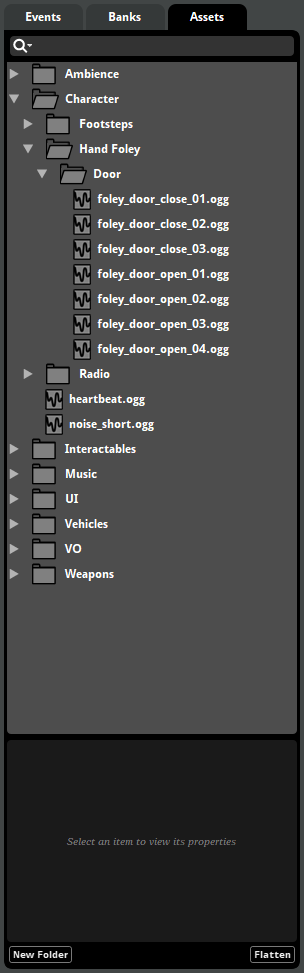
To add a new asset to your project, drag and drop audio files into the assets browser. It is also possible to copy or move audio files into your project's assets folder in Finder or Explorer.
You can also create folders by right clicking in an empty space in the assets browser and selecting "New Folder" from the context menu, or by clicking on the "New Folder" browser tray button.
You can filter which assets are displayed by clicking on the browser search bar and typing part of the name of the asset you want to see. For information about the filters available in this browser, see the Searching section of this chapter.
Changes made in the assets browser directly affect the files on disk. As a consequence, changes made in the assets browser can not be undone, and affect the files and folders in your project's assets folder even if you do not save the project.
For more information on assets and the assets browser, please see the Anatomy of the Assets Browser section of the managing assets chapter.
The banks browser displays your project's banks and bank folders, as well as the events and audio tables assigned to each bank. It allows you to create, edit and organize your project's banks, as well as to assign events to banks. It is found in the event editor window.
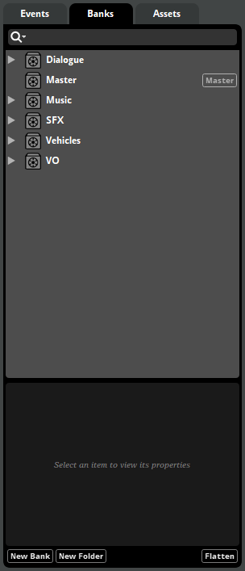
To create a new bank, right click in an empty space in the banks browser and select "New Bank", or click the "New Bank" browser tray button. You can also create folders by right clicking in an empty space in the banks browser and selecting "New Folder", or by clicking the "New Folder" browser tray button.
Placing banks into folders does not affect the build process, but can be useful for organizing the banks browser. Built .bank files are output to the directory specified in the build tab of the preferences dialog.
You can filter what is displayed by clicking on the browser search bar and typing part of the name of the bank you want to see. For information about the filters available in this browser, see the Searching section of this chapter.
By default, selecting an event in the banks browser does not automatically select it in the events browser. If you prefer your selection in either browser to be reflected in the other, you can change the behavior by checking the "Event editor window's event and bank browser tabs share selection" checkbox in the interface tab of the preferences dialog.
In addition to events, it is possible to assign each bank an audio table. An audio table is a collection of audio files to be included in a .bank file despite not being associated with any event in that bank. If your FMOD Studio project makes use of programmer instruments, adding the audio files to be played by those programmer instruments to audio tables is usually preferable to distributing them as loose audio files, as it allows them to benefit from the FMOD Engine's optimized compression and loading methods. For more information about audio tables, see the Dialogue and Localization chapter, and for more information about programmer instruments, see the Programmer Instrument section of the Working with Instruments chapter and the Programmer Instrument section of the Instrument Reference chapter.
For more information on banks, please see the Banks section of the FMOD Studio Concepts chapter.
The effects browser displays your project's preset effects and effect chains, and allows you to create, edit, and organize both. It can be found in the preset browser window.
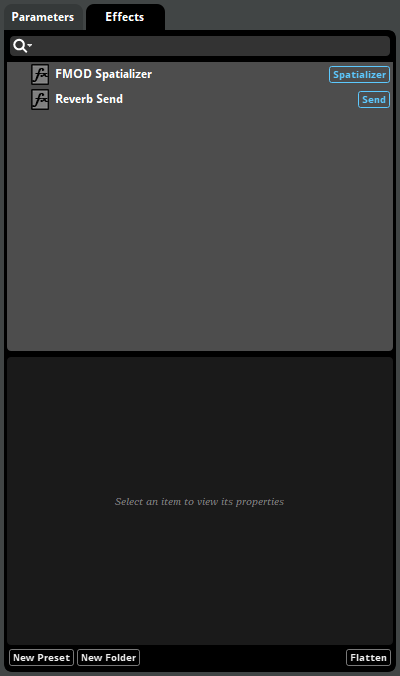
You can create a new preset effect or effect chain by right-clicking on the presets browser and selecting "New Preset" from the context menu, or by clicking the "New Preset" browser tray button. You can also create folders by right clicking in an empty space in the banks browser and selecting "New Folder," or by clicking the "New Folder" browser tray button.
You can filter which effects are displayed by clicking on the browser search bar and typing part of the name of the asset you want to see. For information about the filters available in this browser, see the Searching section of this chapter.
For more information about effects, see the Effects section of the FMOD Studio Concepts chapter.
The events browser displays your project's events and event folders. It allows you to create, assign and organize events, and is found in the event editor window and event browser window.
To create an event in this browser, right click on an empty space in the browser and select "New Event" from the context menu, or click the "New Event" browser tray button. This creates a new empty event.
You can mark any existing event as a default by right-clicking on it and selecting "Add to Defaults" from the context menu. You can create a copy of any default by right-clicking in the event editor opening the context menu's "Event Defaults" sub-menu, and selecting an appropriate default. Events created from defaults are identical to those default events when first created.
To create a folder, right click on an empty space in the browser and select "New Folder" from the context menu, or click the "New Folder" browser tray button. You can also right click on an existing event or folder and select "Move Into New Folder" to create a new folder on that hierarchical level and move the right-clicked event or folder into the new folder. You can place as many folders as you need into your project, and can drag both folders and events into other folders to organize your project as best suits your workflow.
To filter which items are displayed, click on the browser search bar and type part of the name of the item you want to see, or by click on the magnifying glass icon and selecting an option from the magnifying glass menu. For information about the filters available in this browser, see the Searching section of this chapter.
Clicking on an event displays it in the event editor window's editor and overview panes. Hold down the Shift or Ctrl key when clicking on events to select multiple events. Selecting multiple events allows you to edit or manipulate them as a group.
By default, selecting an event in the events browser does not automatically select it in the banks browser. If you prefer your selection in either browser to be reflected in the other, you can change this behavior by checking the "Event editor window's event and bank browser tabs share selection" checkbox in the interface tab of the preferences dialog.
The parameters browser displays your project's preset parameters, and allows you to create, edit, and organize preset parameters. It can be found in the preset browser window.
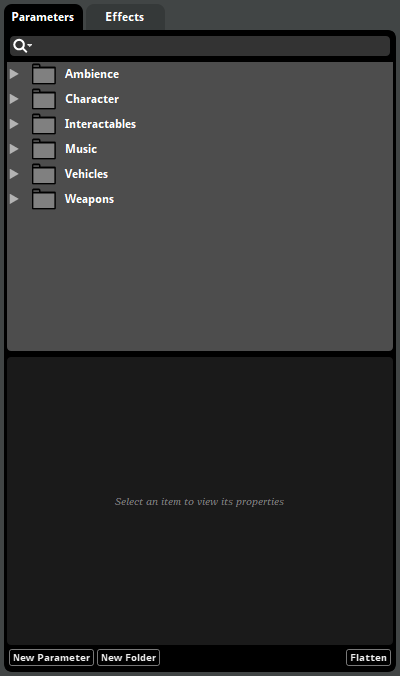
You can create a new preset parameter by right-clicking on the presets browser and selecting "New Parameter" from the context menu, or by clicking the "New Parameter" browser tray button. You can also create folders by right clicking in an empty space in the parameters browser and selecting "New Folder," or by clicking the "New Folder" browser tray button.
You can filter which items are displayed by clicking on the browser search bar and typing part of the name of the item you want to see, or by clicking on the magnifying glass icon and selecting an option from the magnifying glass menu. For information about the filters available in this browser, see the Searching section of this chapter.
For more information about parameters and preset parameters, see the Parameters chapter.
The routing browser displays your project's buses and events other than nested events. It allows you to create and edit buses, and to set the routing for both events and buses, and can be found in the mixer window and mixer routing window.
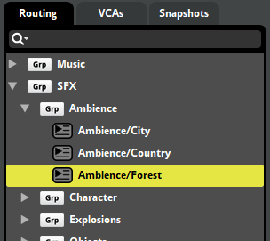
To create a new group bus, right click in an empty space in the banks browser and select "New Group," or click the "New Group" browser tray button. To create a new return bus, right click in an empty space in the banks browser and select "New Return," or click the "New Return" browser tray button. To create a new port bus, right click in an empty space in the banks browser and select "New Port," or click the "New Port" browser tray button.
Unlike most browsers, the routing browser does not include folders. Instead, buses and events may be placed inside group buses. This determines the routing of the buses and events in your project: Each event or bus is routed into the group bus, master bus, or port bus that contains that event or bus. Port buses and the master bus cannot be routed into other buses.
You can reorganize your project's routing by dragging events and buses to new locations in the routing browser. For more information about group buses and routing, see the Group Buses and Routing section of the Mixing chapter.
You can filter what is displayed in the routing browser by clicking on the browser search bar and typing part of the name of the bank you want to see.
In the mixer window, selecting an event or bus in the routing browser automatically selects it in the mixing desk, if it is present in the mixing desk, and also displays its signal chain in the deck.
For more information about the routing browser, see the Routing Tab section of the Mixing chapter.
The scenes browser displays your project's scenes and scene folders. It allows you to create, assign and organize scenes, and is found in the sandbox window.
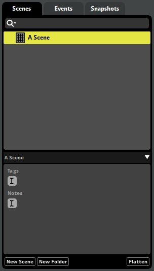
You can create a new scene by right-clicking on the scenes browser and selecting "New Scene" from the context menu, or by clicking the "New Scene" browser tray button. You can also create folders by right clicking in an empty space in the scenes browser and selecting "New Folder," or by clicking the "New Folder" browser tray button.
You can filter which items are displayed by clicking on the browser search bar and typing part of the name of the item you want to see, or by clicking on the magnifying glass icon and selecting an option from the magnifying glass menu. For information about the filters available in this browser, see the Searching section of this chapter.
For more information about scenes, see the The Sandbox chapter.
The snapshots browser displays your project's snapshots and snapshot groups. It allows you to create, prioritize, and edit snapshots.
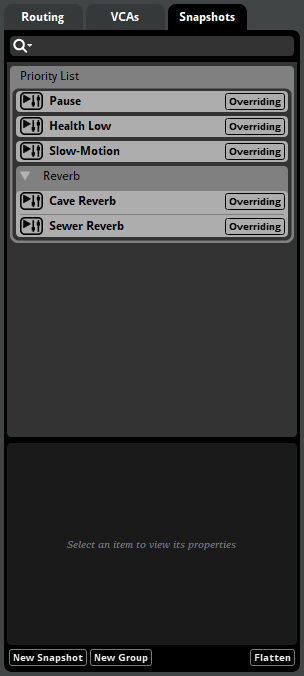
You can create a new snapshot or snapshot group by right-clicking in the snapshots browser to open the context menu and selecting "New Snapshot" or "New Group," or by clicking the "New Snapshot" or "New Group" browser tray buttons.
Unlike most browsers, the snapshots browser does not include folders. Instead, snapshots may be placed inside snapshot groups.
The order in which snapshots and snapshot groups appear in the snapshots browser determines their priority. Items higher in the browser have a higher priority, while items lower in the browser have a lower priority.
When multiple different snapshots that affect the same property are active at the same time, high-priority snapshots are applied after the lower-priority snapshots, meaning that the high-priority snapshots can override or adjust the changes made by lower-priority snapshots. All snapshots in a snapshot group share that group's priority. For more information about snapshot priority, see the Overriding versus Blending Snapshots section of the Mixing chapter.
You can change the priority of a snapshot or snapshot group, or move a snapshot into or out of a snapshot group, by dragging it to a new position in the browser.
You can filter which items are displayed by clicking on the browser search bar and typing part of the name of the item you want to see, or by clicking on the magnifying glass icon and selecting an option from the magnifying glass menu. For information about the filters available in this browser, see the Searching section of this chapter.
For more information about the snapshots browser, see the Snapshots Tab section of the Mixing chapter.
The VCAs browser displays your project's VCAs, as well as the buses and VCAs assigned to them. It allows you to create and edit your project's VCAs, and is found in the mixer window.
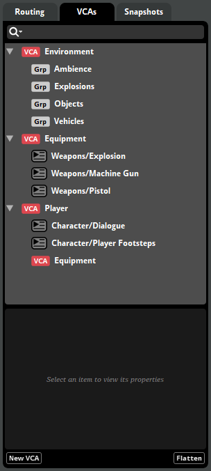
You can create a new VCA by right-clicking in the VCAs browser and selecting "New VCA" from the context menu, or by clicking the "New VCA" browser tray button.
You can assign any bus or VCA to a VCA by right-clicking on the item to be assigned and selecting "Assign to VCA" from the context menu.
Unlike most browsers, the VCAs browser does not include folders. Instead, the events, buses and VCAs assigned to a VCA are displayed below and slightly to the right of that VCA, in a manner similar to how items are displayed below and to the right of their containing folders in other browsers.
You can filter which items are displayed by clicking on the browser search bar and typing part of the name of the item you want to see, or by clicking on the magnifying glass icon and selecting an option from the magnifying glass menu. For information about the filters available in this browser, see the Searching section of this chapter.
For more information about VCAs and the VCAs browser, see the VCAs section of the Mixing chapter.